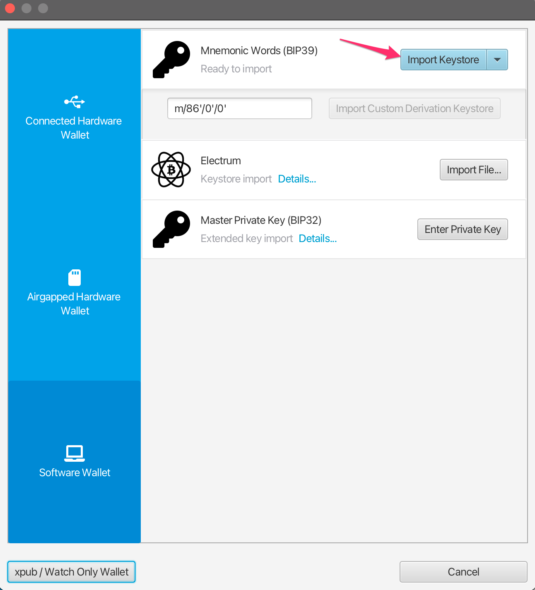
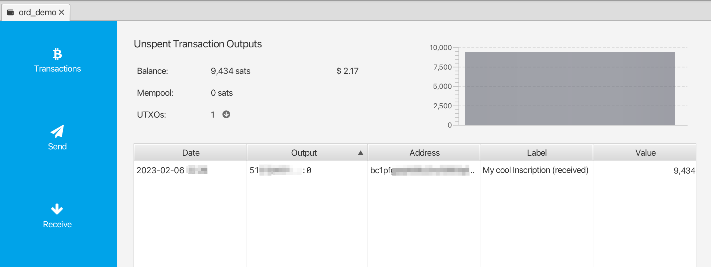

Introducción
This handbook is a guide to ordinal theory. Ordinal theory concerns itself with gros, giving them individual identities and allowing them to be tracked, transferred, and imbued with meaning.
Gros, not groestlcoin, are the atomic, native currency of the Groestlcoin network. One groestlcoin can be sub-divided into 100,000,000 gros, but no further.
La teoría Ordinal opera sin la necesidad de una cadena lateral o token distinto a Groestlcoin, y puede utilizarse sin ningún cambio en la red Groestlcoin. Funciona ahora mismo.
Ordinal theory imbues gros with numismatic value, allowing them to be collected and traded as curios.
Individual gros can be inscribed with arbitrary content, creating unique Groestlcoin-native digital artifacts that can be held in Groestlcoin wallets and transferred using Groestlcoin transactions. Inscriptions are as durable, immutable, secure, and decentralized as Groestlcoin itself.
Otros casos de uso más inusuales son posibles: monedas por fuera de la cadena y coloreadas (colored-coins), infraestructura de clave pública con rotación de clave, un reemplazo descentralizado para el DNS. No obstante, en la actualidad, tales casos de uso son especulativos y existen solo en las mentes de los teóricos de ordinals.
Para obtener más detalles sobre la teoría Ordinal, consulte la descripción general.
Para obtener más detalles sobre las inscripciones, ver inscripciones.
Cuando estés listo para ponerte manos a la obra, un buen lugar para comenzar es en la página de inscripciones, un tipo de artefacto digital posibilitado por la teoría ordinal.
Enlaces
Descripción General de la Teoría Ordinal
Ordinals are a numbering scheme for gros that allows tracking and transferring individual gros. These numbers are called ordinal numbers. Gros are numbered in the order in which they're mined, and transferred from transaction inputs to transaction outputs first-in-first-out. Both the numbering scheme and the transfer scheme rely on order, the numbering scheme on the order in which gros are mined, and the transfer scheme on the order of transaction inputs and outputs. Thus the name, ordinals.
Technical details are available in the BIP.
La teoría Ordinal funciona en este momento sin hacer cambios a Groestlcoin y no requiere de un token aparte u otra blockchain.
Los números Ordinales tienen varias representaciones:
-
Integer notation:
2099994106992659The ordinal number, assigned according to the order in which the gro was mined. -
Decimal notation:
3891094.16797The first number is the block height in which the gro was mined, the second the offset of the gro within the block. -
Degree notation:
3°111094′214″16797‴. We'll get to that in a moment. -
Percentile notation:
99.99971949060254%. The gro's position in Groestlcoin's supply, expressed as a percentage. -
Name:
satoshi. An encoding of the ordinal number using the charactersathroughz.
Arbitrary assets, such as NFTs, security tokens, accounts, or stablecoins can be attached to gros using ordinal numbers as stable identifiers.
Ordinals is an open-source project, developed on GitHub. The project consists of a BIP describing the ordinal scheme, an index that communicates with a Groestlcoin Core node to track the location of all gros, a wallet that allows making ordinal-aware transactions, a block explorer for interactive exploration of the blockchain, functionality for inscribing gros with digital artifacts, and this manual.
Rareza
Humans are collectors, and since gros can now be tracked and transferred, people will naturally want to collect them. Ordinal theorists can decide for themselves which gros are rare and desirable, but there are some hints…
Groestlcoin tiene eventos periódicos, algunos frecuentes y algunos menos comunes, y estos se prestan para obtener un sistema de rareza. Estos eventos periódicos son:
-
Blocks: A new block is mined approximately every 1 minute, from now until the end of time.
-
Difficulty adjustments: Every 2016 blocks, or approximately every 1.5 days, the Groestlcoin network responds to changes in hashrate by adjusting the difficulty target which blocks must meet in order to be accepted.
-
Halvings: Every 1,050,000 blocks.
-
Cycles: Every 6 * 1,050,000 blocks.
Esto nos conlleva a los siguientes niveles de rareza:
common: Any gro that is not the first gro of its blockuncommon: The first gro of each blockrare: The first gro of each difficulty adjustment periodepic: The first gro of each halving epochlegendary: The first gro of each cyclemythic: The first gro of the genesis block
Which brings us to degree notation, which unambiguously represents an ordinal number in a way that makes the rarity of a gro easy to see at a glance:
A°B′C″D‴
│ │ │ ╰─ Index of gro in the block
│ │ ╰─── Index of block in difficulty adjustment period
│ ╰───── Index of block in halving epoch
╰─────── Cycle, numbered starting from 0
Los teóricos de Ordinals suelen usar los términos "hora", "minuto", "segundo" y "tercero" en referencia a A, B, C, y D.
Now for some examples. This gro is common:
1°1′1″1‴
│ │ │ ╰─ Not first gro in block
│ │ ╰─── Not first block in difficulty adjustment period
│ ╰───── Not first block in halving epoch
╰─────── Second cycle
This gro is uncommon:
1°1′1″0‴
│ │ │ ╰─ First gro in block
│ │ ╰─── Not first block in difficulty adjustment period
│ ╰───── Not first block in halving epoch
╰─────── Second cycle
This gro is rare:
1°1′0″0‴
│ │ │ ╰─ First gro in block
│ │ ╰─── First block in difficulty adjustment period
│ ╰───── Not the first block in halving epoch
╰─────── Second cycle
This gro is epic:
1°0′1″0‴
│ │ │ ╰─ First gro in block
│ │ ╰─── Not first block in difficulty adjustment period
│ ╰───── First block in halving epoch
╰─────── Second cycle
This gro is legendary:
1°0′0″0‴
│ │ │ ╰─ First gro in block
│ │ ╰─── First block in difficulty adjustment period
│ ╰───── First block in halving epoch
╰─────── Second cycle
And this gro is mythic:
0°0′0″0‴
│ │ │ ╰─ First gro in block
│ │ ╰─── First block in difficulty adjustment period
│ ╰───── First block in halving epoch
╰─────── First cycle
If the block offset is zero, it may be omitted. This is the uncommon gro from above:
1°1′1″
│ │ ╰─ Not first block in difficulty adjustment period
│ ╰─── Not first block in halving epoch
╰───── Second cycle
Rare Gro Supply
Suministro Total
common: 10.4 quadrillionpoco común: 6,929,999raro: 3437épico: 32legendario: 5mítico: 1
Suministro actual:
common: 8.3 quadrillionpoco común: 745,855raro: 369épico: 3legendario: 0mítico: 1
At the moment, even uncommon gros are quite rare. As of this writing, 745,855 uncommon gros have been mined - one per 25.6 groestlcoin in circulation.
Nombres
Each gro has a name, consisting of the letters A through Z, that get shorter the further into the future the gro was mined. They could start short and get longer, but then all the good, short names would be trapped in the unspendable genesis block.
As an example, 1905530482684727°'s name is "iaiufjszmoba". The name of the last gro to be mined is "a". Every combination of 10 characters or less is out there, or will be out there, someday.
Exóticos
Gros may be prized for reasons other than their name or rarity. This might be due to a quality of the number itself, like having an integer square or cube root. Or it might be due to a connection to a historical event, such as gros from block 1,439,424, the block in which SegWit activated, or 10499999999999999°, the last gro that will ever be mined.
Such gros are termed "exotic". Which gros are exotic and what makes them so is subjective. Ordinal theorists are encouraged to seek out exotics based on criteria of their own devising.
Inscripciones
Gros can be inscribed with arbitrary content, creating Groestlcoin-native digital artifacts. Inscribing is done by sending the gro to be inscribed in a transaction that reveals the inscription content on-chain. This content is then inextricably linked to that gro, turning it into an immutable digital artifact that can be tracked, transferred, hoarded, bought, sold, lost, and rediscovered.
Arqueología
Whether or not ordinals are of interest to NFT archaeologists is an open question! Ordinals were in fact created by Gruve-P in 2014 when he mined the Groestlcoin genesis block. In this sense, ordinals, and especially early ordinals, are certainly of historical interest.
Artefactos Digitales
Imagina un artefacto físico. Digamos una moneda rara, guardada de forma segura durante muchísimos años en el oscuro y secreto escondite de un tesoro vikingo, ahora desenterrado por tus propias manos. Esta moneda...
...tiene un dueño. Tú. Mientras la mantengas a salvo, nadie puede quitártela.
...está completa. No le falta ninguna pieza.
...solo puede ser modificada por ti. Si fueras comerciante y llegaras a la China del siglo XVIII, solo tu podrías marcarla con tu sello personal.
...solo puede ser desechada por ti. La decisión de vender, intercambiar o regalarla es tuya, y a quien tú desees.
¿Qué son los artefactos digitales? Pues simplemente, son el equivalente digital de los artefactos físicos.
Para que algo digital sea un artefacto digital, debe ser como esa moneda tuya:
-
Los artefactos digitales pueden tener dueño. Un número no es un artefacto digital, porque nadie puede ser dueño de él.
-
Los artefactos digitales están completos. Un NFT que apunta a contenido fuera de cadena alojado en IPFS o Arweave está incompleto, y por lo tanto no es un artefacto digital.
-
Los artefactos digitales son sin permiso. Un NFT que no pueda ser vendido sin tener que pagar regalías no es sin permisos, y por lo tanto no es un artefacto digital.
-
Los artefactos digitales no pueden ser censurados. Puede que hoy en día se permita cambiar la información en una base de datos centralizada, pero tal vez mañana no sea posible, por lo tanto, no puede ser un artefacto digital.
-
Los artefactos digitales son inmutables. Un NFT con una llave de actualización o dinámico no es un artefacto digital.
La definición de un artefacto digital tiene la intención de reflejar lo que deberían ser los NFTs, y lo que siempre serán las inscripciones debido a su naturaleza.
Inscripciones
Inscriptions inscribe gros with arbitrary content, creating groestlcoin-native digital artifacts, more commonly known as NFTs. Inscriptions do not require a sidechain or separate token.
These inscribed gros can then be transferred using groestlcoin transactions, sent to groestlcoin addresses, and held in groestlcoin UTXOs. These transactions, addresses, and UTXOs are normal groestlcoin transactions, addresses, and UTXOS in all respects, with the exception that in order to send individual gros, transactions must control the order and value of inputs and outputs according to ordinal theory.
El modelo de contenido de las inscripciones funciona similar al de la web.Una inscripción está conformada por el tipo de contenido, conocido como el tipo MIME, y el contenido que es una cadena de bytes. Esto permite que el contenido de la inscripción se pueda obtener de un servidor web y tener la posibilidad de crear inscripciones HTML que usen el contenido de otras inscripciones.
El contenido de la inscripción está completamente en la cadena de bloques o blockchain, almacenado en scripts de taproot. Los scripts de taproot tienen muy pocas restricciones en cuanto a lo que pueden contener, y además reciben el descuento de testigo, lo que hace que el almacenamiento de contenido de las inscripciones sea relativamente económico.
Dado que los gastos de script de taproot (taproot script spends) sólo pueden hacerse desde salidas de taproot existentes, las inscripciones se hacen en dos fases de compromiso/revelación. Primero, en la transacción de compromiso, se crea una salida de taproot que se compromete a un script que contiene el contenido de inscripción. Segundo, en la transacción de revelación, la salida creada por la transacción de compromiso se gasta, revelando el contenido de la inscripción en la cadena.
El contenido de la inscripción se serializa utilizando push de datos dentro de condicionales que no han sido ejecutados, a estos se les llama "sobres". Los sobres consisten en un OP_FALSE OP_IF ... OP_ENDIF envolviendo los push de datos. Dado que los sobres son operaciones nulas, no cambian la semántica del script en el que están incluidos y pueden combinarse con cualquier otro script de bloqueo.
Una inscripción de texto que contiene la cadena "¡Hola, Mundo!" se serializa de la siguiente manera:
OP_FALSE
OP_IF
OP_PUSH "ord"
OP_PUSH 1
OP_PUSH "text/plain;charset=utf-8"
OP_PUSH 0
OP_PUSH "¡Hola, Mundo!"
OP_ENDIF
Primero, se hace un push con el string ord para diferenciar que sobre va a utilizar la inscripción.
OP_PUSH 1 indica que el próximo push es el tipo de contenido y OP_PUSH 0 indica que los siguientes datos en el push contienen el contenido que se va a anexar. Múltiples push de datos deben ser utilizados para inscripciones de gran tamaño ya que una de las pocas restricciones de Taproot es que un push de datos no puede ser mayor a 520 bytes.
The inscription content is contained within the input of a reveal transaction, and the inscription is made on the first gro of its input. This gro can then be tracked using the familiar rules of ordinal theory, allowing it to be transferred, bought, sold, lost to fees, and recovered.
Contenido
El modelo de datos de las inscripciones es el de una respuesta HTTP, permitiendo que el contenido de la inscripción sea obtenido a través de un servidor web y visualizado en un navegador web.
Campos
Las inscripciones pueden incluir campos antes de un cuerpo opcional. Cada campo consta de dos push de datos, una etiqueta y un valor.
Actualmente, el único campo definido es content-type, con una etiqueta de 1, cuyo valor es el tipo MIME del cuerpo.
Para indicar el principio del cuerpo y el final de los campos se hace un push de datos vacío.
Las etiquetas no reconocidas se interpretan de forma diferente según sean pares o impares, siguiendo la regla "está bien que sean impares" utilizada por la Lightning Network.
Las etiquetas pares se utilizan para campos que pueden afectar a la creación, asignación inicial o transferencia de una inscripción. Por esto, las inscripciones con campos pares no reconocidos deben mostrarse como "no vinculadas", es decir, sin ubicación.
Las etiquetas impares se utilizan para campos que no afectan a la creación,asignación inicial o transferencia, tales como los metadatos adicionales, y por lo tanto se pueden ignorar.
IDs de las Inscripciones
Las inscripciones están alojadas en las entradas de una transacción de revelación. Para identificarlas se les asigna un ID como este:
521f8eccffa4c41a3a7728dd012ea5a4a02feed81f41159231251ecf1e5c79dai0
La parte delante de la i es el ID de transacción (txid) de la transacción de revelación. El número después la i es el índice (comenzando por 0) de las nuevas inscripciones que se están inscribiendo en la transacción de revelación.
Las inscripciones pueden estar en diferentes entradas, dentro de la misma entrada o en una combinación de ambas. En ambos de estos casos, el orden es claro, ya que un analizador sintáctico (parser) recorrería las entradas consecutivamente buscando los sobres de las inscripciones.
| Entrada | Conteo de Inscripciones | Índice |
|---|---|---|
| 0 | 2 | i0, il |
| 1 | 1 | i2 |
| 2 | 3 | i3. i4, i5 |
| 3 | 0 | |
| 4 | 1 | i6 |
Sandboxing o Aislamiento
Las inscripciones en HTML y SVG están restringidas en un entorno aislado llamado sandboxing para evitar referencias a contenido fuera de la cadena, manteniendo así las inscripciones inmutables y contenidas dentro del entorno.
Esto se logra cargando las inscripciones en HTML y SVG dentro de iframes con el atributo sandbox y agregando Content-Security-Policy a los encabezados.
Procedencia
El propietario de una inscripción puede crear inscripciones hijas, esto establece una procedencia sin permiso de que esos hijos en la cadena fueron creados por el dueño de la inscripción padre. Esto puede utilizarse para colecciones, en las que los hijos de una inscripción son miembros de la misma colección.
Los hijos pueden tener a su vez hijos, lo que permite crear jerarquías complejas. Por ejemplo, un artista puede crear una inscripción que lo represente a él mismo, con sub-inscripciones que representen colecciones creadas por él, siendo los hijos de esas sub-inscripciones elementos de esas colecciones.
Especificaciónes
Para crear el hijo de una inscripción C con una inscripción padre P:
- Crear una transacción de inscripción T como de costumbre para C.
- Gasta el padre P en una de las entradas de T.
- Incluye la etiqueta
3, es decir,OP_PUSH 3, en C, con el valor del ID binario serializado de la inscripción P, serializado con elTXIDde 32 bytes, seguido por elINDEXen formato little-endian de cuatro bytes, omitiendo los ceros al final.
NB Los bytes del ID de una transacción de groestlcoin se invierten en su representación textual, por lo que el ID de transacción serializado será en el orden inverso.
Ejemplo
Ejemplo de una inscripción hija de 000102030405060708090a0b0c0d0e0f101112131415161718191a1b1c1d1e1fi0:
OP_FALSE
OP_IF
OP_PUSH "ord"
OP_PUSH 1
OP_PUSH "text/plain;charset=utf-8"
OP_PUSH 3
OP_PUSH 0x1f1e1d1c1b1a191817161514131211100f0e0d0c0b0a09080706050403020100
OP_PUSH 0
OP_PUSH "¡Hola, mundo!"
OP_ENDIF
Ten en cuenta que el valor de la etiqueta 3 es en binario, no hexadecimal,y para que la inscripción hija sea reconocida como tal, 000102030405060708090a0b0c0d0e0f101112131415161718191a1b1c1d1e1fi0 debe gastarse como una de las entradas de la transacción de inscripción.
Ejemplo de codificación de la inscripción que contiene el ID 000102030405060708090a0b0c0d0e0f101112131415161718191a1b1c1d1e1fi255:
OP_FALSE
OP_IF
…
OP_PUSH 3
OP_PUSH 0x1f1e1d1c1b1a191817161514131211100f0e0d0c0b0a09080706050403020100ff
…
OP_ENDIF
Y del ID de inscripción 000102030405060708090a0b0c0d0e0f101112131415161718191a1b1c1d1e1fi256:
OP_FALSE
OP_IF
…
OP_PUSH 3
OP_PUSH 0x1f1e1d1c1b1a191817161514131211100f0e0d0c0b0a090807060504030201000001
…
OP_ENDIF
Notas
La etiqueta 3 se utiliza porque es la primera etiqueta impar disponible. Las etiquetas impares desconocidas no desvinculan las inscripciones, por lo que las inscripciones hijas serían reconocidas y rastreadas por las versiones anteriores de ord.
Se puede cerrar una colección quemando la inscripción principal de la colección, lo que garantiza que no se pueden emitir más ítems en la colección.
Recursión
Una excepción importante a las restricciones del sandboxing es la recursión. Se permite el acceso al punto final o endpoint /content de ord, esto permite que las inscripciones accedan al contenido de otras inscripciones solicitando /content/<ID_DE_INSCRIPCION>.
Esto tiene varios casos de uso interesantes:
-
Combinar el contenido de inscripciones existentes.
-
"Publicar fragmentos de código, imágenes, audio y hojas de cálculo como recursos públicos.
-
Colecciones de arte generativo en donde un algoritmo está inscrito en JavaScript, y se instancia desde múltiples inscripciones con semillas únicas.
-
Colecciones generativas de imágenes de perfil donde los accesorios y atributos están inscritos como imágenes individuales, o en un atlas de texturas, y luego se combinan, al estilo collage, en combinaciones únicas en múltiples inscripciones.
Algunos otros puntos finales a los que pueden acceder las inscripciones son los siguientes:
/blockheight: altura del bloque más reciente./blockhash: hash del bloque más reciente./blockhash/<ALTURA>: hash del bloque a la altura de bloque dada./blocktime: marca de tiempo UNIX del bloque más reciente.
Preguntas frecuentes sobre la teoría Ordinal
¿Qué es la teoría ordinal?
Ordinal theory is a protocol for assigning serial numbers to gros, the smallest subdivision of a groestlcoin, and tracking those gros as they are spent by transactions.
These serial numbers are large numbers, like this 804766073970493. Every gro, which is ¹⁄₁₀₀₀₀₀₀₀₀ of a groestlcoin, has an ordinal number.
¿La teoría ordinal requiere una cadena lateral, un token separado o cambios en Groestlcoin?
¡No! La teoría ordinal funciona en este momento, sin una cadena lateral, y el único token necesario es simplemente bitcoin.
¿Para qué sirve la teoría Ordinals?
Collecting, trading, and scheming. Ordinal theory assigns identities to individual gros, allowing them to be individually tracked and traded, as curios and for numismatic value.
Ordinal theory also enables inscriptions, a protocol for attaching arbitrary content to individual gros, turning them into groestlcoin-native digital artifacts.
¿Cómo funciona la teoría ordinal?
Ordinal numbers are assigned to gros in the order in which they are mined. The first gro in the first block has ordinal number 0, the second has ordinal number 1, and the last gro of the first block has ordinal number 4,999,999,999.
Gros live in outputs, but transactions destroy outputs and create new ones, so ordinal theory uses an algorithm to determine how gros hop from the inputs of a transaction to its outputs.
Afortunadamente, ese algoritmo es bastante sencillo.
Gros transfer in first-in-first-out order. Think of the inputs to a transaction as being a list of gros, and the outputs as a list of slots, waiting to receive a gro. To assign input gros to slots, go through each gro in the inputs in order, and assign each to the first available slot in the outputs.
Imaginemos una transacción con tres entradas y dos salidas. Las entradas están a la izquierda de la flecha y las salidas a la derecha, todas con sus respectivos valores:
[2] [1] [3] → [4] [2]
Now let's label the same transaction with the ordinal numbers of the gros that each input contains, and question marks for each output slot. Ordinal numbers are large, so let's use letters to represent them:
[a b] [c] [d e f] → [? ? ? ?] [? ?]
To figure out which gro goes to which output, go through the input gros in order and assign each to a question mark:
[a b] [c] [d e f] → [a b c d] [e f]
What about fees, you might ask? Good question! Let's imagine the same transaction, this time with a two gro fee. Transactions with fees send more gros in the inputs than are received by the outputs, so to make our transaction into one that pays fees, we'll remove the second output:
[2] [1] [3] → [4]
The gros eyfahora no tienen donde ir en las salidas``` [a b] [c] [d e f] → [a b c d]
So they go to the miner who mined the block as fees. [The BIP](https://github.com/Groestlcoin/ord-groestlcoin/blob/master/bip.mediawiki) has the details, but in short, fees paid by transactions are treated as extra inputs to the coinbase transaction, and are ordered how their corresponding transactions are ordered in the block. The coinbase transaction of the block might look like this:
[SUBSIDY] [e f] → [SUBSIDY e f]
## ¿Dónde puedo encontrar los detalles técnicos?
[The BIP!](https://github.com/Groestlcoin/ord-groestlcoin/blob/master/bip.mediawiki)
## Why are gro inscriptions called "digital artifacts" instead of "NFTs"?
Una inscripción es un NFT, pero se utiliza el término "artefacto digital", porque es fácil, sugerente y familiar.
La frase "artefacto digital" es muy sugerente, incluso para alguien que nunca ha oído el término. En comparación, NFT es un acrónimo y no proporciona ninguna indicación de lo que significa si no has escuchado el término.
Además, la palabra, "NFT" suena como terminología financiera, y tanto la palabra "fungible" como el sentido de la palabra "token" como se usa en los "NFT" no son comunes fuera de los contextos financieros.
## How do gro inscriptions compare to…
### ¿Los NFT de Ethereum?
_Las inscripciones siempre son inmutables._
No hay forma de que el creador de una inscripción, o el propietario de una inscripción, la modifique después de haber sido creada.
Los NFTs en Ethereum _pueden_ ser inmutables, pero muchos no lo son y pueden ser cambiados o eliminados por el propietario del contrato del NFT.
Para asegurarse de que un NFT de Ethereum sea inmutable, se debe analizar el código del contrato, lo cual requiere un conocimiento a profundidad de la EVM y la semántica de Solidity.
Para un usuario que no tiene habilidades técnicas es bastante difícil determinar si un NFT de Ethereum es mutable o inmutable, y las plataformas Ethereum NFT no se esfuerzan para ayudar a distinguir si un NFT es mutable o inmutable y si el código fuente del contrato está disponible y ha sido auditado.
_El contenido de la inscripción siempre está en la cadena de Groestlcoin._
No hay forma de que una inscripción haga referencia a contenido que esta por fuera de la cadena de Groestlcoin. Debido a esto las inscripciones son más duraderas porque el contenido no puede perderse y también las hace más escasas porque los creadores de inscripciones deben pagar comisiones proporcionales al tamaño del contenido.
Hay algunos NFTs en Ethereum que están en la cadena, pero muchos no lo están y se almacenan en plataformas como IPFS o Arweave, o en servidores web centralizados. No se garantiza que el contenido que esta almacenado en IPFS continue estando disponible, de hecho, ya se ha perdido contenido de NFTs que fueron almacenado en IPFS. Plataformas como Arweave dependen de suposiciones económicas y probablemente fallarán catastróficamente cuando estas suposiciones ya no se cumplan. Los servidores web centralizados pueden desaparecer en cualquier momento.
Es difícil para un usuario que no tienes habilidades técnicas determinar donde el contenido de un NFT de Ethereum esta alojado
_Las inscripciones son mucho más sencillas._
Los NFT de Ethereum dependen de la red y la máquina virtual de Ethereum, las cuales son altamente complejas, cambian constantemente e introducen cambios mediante bifurcaciones incompatibles con versiones anteriores.
Por otro lado, las inscripciones dependen de la blockchain de Groestlcoin que es relativamente simple y conservadora, e introduce cambios mediante bifurcaciones suaves compatibles con versiones anteriores.
_Las inscripciones son más seguras._
Las inscripciones heredan el modelo de transacción de Groestlcoin, lo que permite al usuario ver exactamente qué inscripciones se están transfiriendo en una transacción antes de firmarla. Las inscripciones pueden ofrecerse a la venta mediante transacciones parcialmente firmadas, lo que no requiere el permiso un tercero, como un mercado o plataforma para la transferencia.
En comparación, los NFT de Ethereum están plagados de vulnerabilidades de seguridad para el usuario final. Es común firmar transacciones a ciegas, otorgar permisos ilimitados a aplicaciones de terceros sobre los NFTs e interactuar con contratos inteligentes complejos e impredecibles. Estos problemas que tienen los NFTs de Ethereum simplemente no son una preocupación para los teóricos de Ordinals.
_Las inscripciones son más escasas._
Para mintear, transferir y almacenar inscripciones, se requiere bitcoin. Superficialmente esto parece un inconveniente, pero la razón de ser de los artefactos digitales es ser escasos y, por lo tanto, valiosos.
Los NFT de Ethereum, por otro lado, pueden ser minteados en cantidades prácticamente ilimitadas con una sola transacción, lo que los hace intrínsecamente menos escasos y, por lo tanto, potencialmente menos valiosos.
_Las inscripciones no pretenden respaldar regalías en la cadena._
En teoría, la implementación de regalías dentro de la blockchain suena bien, pero su puesta en práctica presenta problemas significativos. El pago de regalías no puede ser aplicado en la cadena sin restricciones complejas e invasivas. En este momento, el ecosistema de NFT en Ethereum está enfrentando problemas debido a la confusión generada por las regalías, y colectivamente se está llegando a la conclusión de que las regalías en la cadena las cuales fueron una ventaja que se planteó a favor de los NFTs para los artistas, no son posibles. Algunas plataformas ya están eliminando el soporte de regalías.
Las inscripciones evitan completamente esta situación al no hacer falsas promesas de respaldar regalías en la cadena, evitando así la confusión, el caos y la negatividad de la situación que ocurre con los NFT en Ethereum.
_Las inscripciones abren las puertas a nuevos mercados._
La valoración de mercado y el flujo de capital en Groestlcoin exceden considerablemente a los de Ethereum. Gran parte de esta liquidez no está disponible para los NFT en Ethereum, ya que muchos bitcoiners prefieren no interactuar con el ecosistema de Ethereum debido a las preocupaciones relacionadas con la simplicidad, seguridad y descentralización.
Estos bitcoiners podrían estar más interesados en las inscripciones que en los NFT de Ethereum, abriendo la puerta a otros tipos de coleccionistas.
_Las inscripciones tienen un modelo de datos más robusto._
Una inscripción está conformada por el tipo de contenido, conocido como el tipo MIME, y una cadena (string) de bytes que sería el contenido. Este es el mismo modelo de datos utilizado por la web, este permite que el contenido de la inscripción evolucione con la web, y llegue a admitir cualquier tipo de contenido soportado por los navegadores web, sin requerir cambios en el protocolo subyacente.
## Inscripciones para...
### Artistas
_Las inscripciones están en Groestlcoin_. Groestlcoin es la moneda digital con el mayor prestigio y la mayor probabilidad de supervivencia a largo plazo. Si deseas garantizar que tu arte perdure en el futuro, no hay mejor forma de publicarlo que mediante inscripciones.
_Cheaper on-chain storage._ At $0,40 per GRS and the minimum relay fee of 1 gro per vbyte, publishing inscription content costs $0.0025 per 1 million bytes.
_¡Las inscripciones están en sus inicios!_ Las inscripciones todavía están en desarrollo y aún no se han lanzado en la red principal. Esto te brinda la oportunidad de ser un pionero y explorar el medio a medida que evoluciona.
_Las inscripciones son simples_. No es necesario escribir ni comprender contratos inteligentes.
_Las inscripciones abren las puertas a nuevas fuentes de liquidez_. Las inscripciones resultan más accesibles y atractivas para los poseedores de bitcoin, dando paso a una clase completamente nueva de coleccionistas.
_Las inscripciones están diseñadas para los artefactos digitales_. Se diseñan desde cero enfocándose en los NFTs y ofrecen un modelo de datos superior, con características como símbolos globalmente únicos y una procedencia mejorada.
_Las inscripciones no admiten regalías en cadena_. Esto puede verse como algo negativo, pero realmente depende de la perspectiva de cada uno. Si bien las regalías en cadena han beneficiado enormemente a los creadores, también han generado una gran cantidad de confusión en el ecosistema NFT de Ethereum. En este momento, el ecosistema está lidiando con este problema, encaminándose hacia un futuro donde las regalías serán opcionales. Las inscripciones no admiten regalías en cadena debido a que técnica y prácticamente no son viables. Sin embargo, si decides crear inscripciones, existen varias estrategias para superar esta restricción: puedes retener una porción de tus inscripciones para futuras ventas, aprovechando así la valorización que puedan tener con el tiempo; o incluso ofrecer incentivos a los usuarios que opten por respetar las regalías opcionales.
### Coleccionistas
_Las inscripciones son sencillas, claras y sin sorpresas inesperadas_. Son siempre inmutables y residen en la cadena de Groestlcoin, lo que elimina la necesidad de gestiones adicionales.
_Las inscripciones están en Groestlcoin_. Puedes verificar fácilmente la ubicación y propiedades de las inscripciones con un nodo de Groestlcoin que tu controlas.
### Groestlcoiners
Permíteme iniciar esta sección señalando que: la principal función de la red de Groestlcoin es la descentralización del dinero. Todos los otros usos que se le pueden dar son secundarios, y eso incluye a la teoría ordinal. Los desarrolladores detrás de esta teoría comprenden muy bien este aspecto y consideran que su trabajo contribuye, aunque sea mínimamente, a la misión principal de Groestlcoin.
Digital artifacts have merit. There are, of course, a great deal of NFTs that are ugly, stupid, and fraudulent. However, there are many that are fantastically creative, and creating and collecting art has been a part of the human story since its inception, and predates even trade and money, which are also ancient technologies.
Groestlcoin ofrece una plataforma increíble para la creación y colección de artefactos digitales de manera segura y descentralizada, protegiendo tanto a usuarios como a artistas, al igual que facilita una plataforma confiable para transmitir y recibir valor.
Los Ordinals y las inscripciones aumentan la demanda de espacio en los bloques de Groestlcoin, lo que aumenta el presupuesto de seguridad de Groestlcoin esto es vital para salvaguardar la transición de Groestlcoin a un modelo de seguridad dependiente de comisiones, a medida que el subsidio de bloque se reduce a una cantidad insignificante.
El contenido de la inscripción se guarda en la cadena de bloques de Groestlcoin y, debido a esto, la necesidad de espacio en los bloques para alojar inscripciones es ilimitada. Esta dinámica establece una demanda constante por el espacio disponible en los bloques de Groestlcoin, favoreciendo la sustentación de un mercado de comisiones saludable, lo que a su vez contribuye a preservar la seguridad de Groestlcoin.
Inscriptions also counter the narrative that Groestlcoin cannot be extended or used for new use-cases. Inscriptions provide a counter argument which is easy to understand, and which targets a popular and proven use case, NFTs, which makes it highly legible.
Si las inscripciones se demuestran, como esperan los autores, ser artefactos digitales muy buscados con una historia rica, servirán como un poderoso gancho para la adopción de Groestlcoin: ven por el arte divertido, quédate por el dinero digital descentralizado.
Las inscripciones son una fuente extremadamente benigna de demanda de espacioen el bloque. A diferencia de, por ejemplo, las stablecoins, que potencialmente dan a los emisores de stablecoins grandes influencia sobre el futuro desarrollo de Groestlcoin, o DeFi, que podría centralizar la minería introduciendo oportunidades para MEV, el arte digital y coleccionables en Groestlcoin, es poco probable que produzcan entidades individuales con suficiente poder para corromper Groestlcoin. El arte es descentralizado.
Se les incentiva a los usuarios de inscripciones y a los proveedores de servicios ejecutar nodos de Groestlcoin, para publicar y rastrear inscripciones, y así apoyar respaldar la cadena.
La teoría ordinal y las inscripciones no afectan en alguna escala significante la fungibilidad de Groestlcoin. Los usuarios de Groestlcoin pueden ignorar ambos y no verse afectados.
We hope that ordinal theory strengthens and enriches groestlcoin, and gives it another dimension of appeal and functionality, enabling it more effectively serve its primary use case as humanity's decentralized store of value.Contribuir a ord
Pasos Sugeridos
- Encuentra un problema en el que quieras trabajar.
- Determina cuál debería ser el primer paso para abordar el problema. Esto podría involucrar código, investigación, la elaboración de una propuesta o incluso sugerir su cierre si está desactualizado o evaluar si es una buena idea desde un inicio.
- Comenta sobre el problema con un esquema de tu primer paso sugerido y pide opiniones. Podrías comenzar a escribir código o hacer pruebas de inmediato, pero esto evita que se haga un esfuerzo potencialmente desperdiciado.
- Si el problema requiere un cambio de código o corrección de bugs, abre un PR preliminar con pruebas y pide sugerencias. Esto asegura que todos estende acuerdo acerca de lo que se debe de hacer, o el primer paso en solucionar elproblema. Como se requieren pruebas escribirlas y probarlas confirma que se pueden llevar a cabo fácilmente
- Escribe código hasta que las pruebas pasen y refactorizar hasta que el código esté listo para enviar.
- Marca el PR como listo para revisar.
- Revisa el PR según sea necesario.
- ¡Por último, fusiónalo!
Comienza por las cosas pequeñas
Los cambios pequeños te permitirán tener un impacto rápidamente, y si eliges el enfoque equivocado, no habrás perdido mucho tiempo.
Ideas para problemas pequeños:
- Añadir una prueba nueva o un caso de prueba que amplíe la cobertura de las pruebas.
- Mejorar o añadir a la documentación existente.
- Identificar un problema que requiera más investigación, realizarla y resumir los hallazgos en un comentario.
- Encontrar un problema que ha quedado desactualizado y sugerir su cierre a través de un comentario.
- Encuentra un caso que no consideras un problema y proporciona tu opinión explicando por qué crees que ese el caso.
Fusiona pronto y a menudo
Divide las tareas grandes en partes con las cuales se puede progresar por separado. Si hay un error, puedes abrir un PR que agregue una prueba fallida ignorada. Esto se puede fusionar, y el siguiente paso puede ser corregir el error y desactivar la prueba. Realiza investigaciones o pruebas y reporta tus resultados. Divide una característica en subcategorías pequeñas e impleméntalas una a la vez.
Descomponer un PR grande en PRs más pequeños que puedan fusionarse individualmente es un arte que vale la pena practicar. El desafío radica en asegurar que cada PR represente una mejora por sí mismo.
Me esfuerzo por aplicar este consejo yo mismo, y siempre obtengo beneficios cuando lo hago.
Los cambios pequeños son rápidos de escribir, revisar y fusionar, lo que es mucho más divertido que trabajar en un solo PR gigante que tarda una eternidad en escribirse, revisarse y fusionarse. Los cambios pequeños no toman mucho tiempo, así que, si necesitas dejar de trabajar en un cambio pequeño, no habrás perdido mucho tiempo a comparación de un cambio más grande en las que se invirtieron muchas horas de trabajo. Conseguir que un PR se fusione rápidamente mejora el proyecto de inmediato, en lugar de tener que esperar mucho tiempo para una mejora más grande. Los cambios pequeños tienen menos probabilidades de acumular conflictos de fusión. _Como decían los atenienses: Los rápidos hacen lo que quieren, los lentos hacen lo que deben.
Busca ayuda
Si te ves atascado por más de 15 minutos, busca ayuda en espacios como el Discord de Rust, en Stack Exchange, o en una discusión sobre el problema dentro del proyecto.
Practica la depuración basada en hipótesis
Formula una hipótesis sobre la causa del problema. Define cómo podrías verificar esa hipótesis. Ejecuta las pruebas correspondientes. Si funciona, genial, has solucionado el problema o, al menos, ahora sabes cómo hacerlo. Si no, vuelve a empezar con una nueva hipótesis.
Presta atención a los mensajes de error
Lee todos los mensajes de error y no toleres las advertencias.
Donaciones
Ordinals is an open-source project by Groestlcoin in development since early 2023.
You can donate here: https://www.groestlcoin.org/donations/
Guías de la Teoría Ordinal
See the table of contents for a list of guides, including a guide to the explorer, a guide for gro hunters, and a guide to inscriptions.
Explorador Ordinal
The ord binary includes a block explorer. We host a instance of the block explorer on mainnet at ordinals.groestlcoin.org, and on signet at ordinals-signet.groestlcoin.org.
Ejecutando El Explorador
El servidor puede ser ejecutado localmente utilizando:
ord server
Para especificar un puerto agrega la bandera (flag) --http-port:
ord server --http-port 8080
To enable the JSON-API endpoints add the --enable-json-api or -e flag:
ord --enable-json-api server
Para ver como se verían tus inscripciones puedes ejecutar esto:
ord preview <ARCHIVO1> <ARCHIVO2> ...
Búsqueda
El cuadro de búsqueda acepta una variedad de representaciones de objetos.
Bloques
Los bloques pueden buscarse por hash, por ejemplo, este es el bloque génesis:
00000ac5927c594d49cc0bdb81759d0da8297eb614683d3acb62f0703b639023
Transacciones
Transactions can be searched by hash, for example, the block 1 coinbase transaction:
cf72b5842b3528fd7f3065ba9e93c50a62e84f42b3b7b7a351d910b5e353b662
Salidas
Las salidas de las transacciones se pueden buscar por outpoint, por ejemplo, esta la única salida de la transacción coinbase del bloque génesis:
3ce968df58f9c8a752306c4b7264afab93149dbc578bd08a42c446caaa6628bb:0
Gros
Gros can be searched by integer, their position within the entire groestlcoin supply:
Por decimal, su bloque y desplazamiento dentro de ese bloque:
Por grado sexagesimal, su ciclo, bloques desde el ultimo halving, bloques desde el último ajuste de dificultad y desplazamiento dentro de su bloque:
Por nombre, utilizando su representación en base 26 con letras de la "a" hasta la "z":
Or by percentile, the percentage of groestlcoin's supply that has been or will have been issued when they are mined:
Guía de inscripciones Ordinal
Individual gros can be inscribed with arbitrary content, creating Groestlcoin-native digital artifacts that can be held in a Groestlcoin wallet and transferred using Groestlcoin transactions. Inscriptions are as durable, immutable, secure, and decentralized as Groestlcoin itself.
Working with inscriptions requires a Groestlcoin full node, to give you a view of the current state of the Groestlcoin blockchain, and a wallet that can create inscriptions and perform gro control when constructing transactions to send inscriptions to another wallet.
Groestlcoin Core provides both a Groestlcoin full node and wallet. However, the Groestlcoin Core wallet cannot create inscriptions and does not perform gro control.
This requires ord, the ordinal utility. ord doesn't implement its own wallet, so ord wallet subcommands interact with Groestlcoin Core wallets.
Esta guía cubre:
- La instalación de Groestlcoin Core
- Sincronización de la blockchain de Groestlcoin
- Creación de un monedero de Groestlcoin Core
- Using
ord wallet receiveto receive gros - Creación de inscripciones usando
ord wallet inscribe - Enviar inscripciones usando
ord wallet send - Recibir inscripciones con
ord wallet receive
Obtener Ayuda
If you get stuck, try asking for help on the Groestlcoin Discord Server, or checking GitHub for relevant issues.
La instalación de Groestlcoin Core
Groestlcoin Core is available from groestlcoin.org.
Para crear inscripciones es necesario tener la versión 24 de Groestlcoin Core o una más reciente.
Esta guía no cubre los detalles de la instalación de Groestlcoin Core. Una vez que se ha instalado Groestlcoin Core, deberías ser capaz de ejecutar el comando groestlcoind -version con éxito desde la línea de comandos.
Configuración de Groestlcoin Core
ord requiere el índice de transacciones de Groestlcoin Core.
To configure your Groestlcoin Core node to maintain a transaction index, add the following to your groestlcoin.conf:
txindex=1
O, ejecuta groestlcoind con -txindex:
groestlcoind -txindex
Sincronizando la Blockchain de Groestlcoin
Para sincronizar la blockchain o cadena de bloques de bitcoin, ejecuta:
groestlcoind -txindex
…y déjalo ejecutar hasta que getblockcount:
groestlcoin-cli getblockcount
coincida con el recuento de bloques en un explorador de bloques como el explorador de bloques mempool.space. ord interactúa con groestlcoind, así que debes dejar groestlcoind ejecutándose en segundo plano mientras estés usando ord.
Instalación de ord
The ord utility is written in Rust and can be built from source. Pre-built binaries are available on the releases page.
Puedes instalar el último binario preconstruido desde la línea de comandos usando:
curl --proto '=https' --tlsv1.2 -fsLS https://raw.githubusercontent.com/Groestlcoin/ord-groestlcoin/master/install.sh | bash -s
Una vez que ord esté instalado, deberías poder de ejecutar:
ord --version
El cual muestra el número de versión de ord.
Creación de un monedero de Groestlcoin Core
ord utiliza Groestlcoin Core para gestionar claves privadas, firmar transacciones y transmitir transacciones a la red Groestlcoin.
Para crear un monedero de Groestlcoin Core llamado ord que se utilizara con ord, ejecuta:
ord wallet create
Receiving Gros
Inscriptions are made on individual gros, using normal Groestlcoin transactions that pay fees in gros, so your wallet will need some gros.
Obtén una nueva dirección de tu monedero ord ejecutando:
ord wallet receive
Y envíale algunos fondos.
Puedes ver las transacciones pendientes con:
ord wallet transactions
Una vez que la transacción se confirme, deberías poder ver las salidas de la transacción con ord wallet outputs.
Creación de Contenido para las Inscripciones
Gros can be inscribed with any kind of content, but the ord wallet only supports content types that can be displayed by the ord block explorer.
Además, las inscripciones se incluyen en las transacciones, debido a esto, en cuanto más grande sea el contenido, mayor será la comisión que debe pagar por la transacción de la inscripción.
El contenido de inscripción se incluye en el testigo de la transacción, los cuales reciben el descuento de testigo. Para calcular un aproximado de la comisión que pagará la transacción de una inscripción, divide el tamaño del contenido por cuatro y multiplica por la tasa de comisión.
Las transacciones de inscripción deben tener un peso inferior a 400,000 unidades,de lo contrario, no serán retransmitidas por Groestlcoin Core. Un byte del contenido de inscripción equivale a una unidad de peso. Considerando que una transacción de inscripción abarca más que solo el contenido de la inscripción se debe restringir el contenido de cada inscripción a menos de 400,000 unidades de peso. Para mantener un margen de seguridad, se recomienda no exceder las 390,000 unidades de peso.
Creación de Inscripciones
Para crear una inscripción con el contenido de ARCHIVO, ejecuta:
ord wallet inscribe --fee-rate FEE_RATE FILE
Ord mostrará dos IDs de transacciones, uno para la transacción de compromiso, uno para la transacción de revelación, y el ID de inscripción. Los IDs de inscripción tienen el formato TXIDiN, donde TXID es el ID de la transacción de revelación, y N es el índice de la inscripción en la transacción de revelación.
The commit transaction commits to a tapscript containing the content of the inscription, and the reveal transaction spends from that tapscript, revealing the content on chain and inscribing it on the first gro of the input that contains the corresponding tapscript.
Wait for the reveal transaction to be mined. You can check the status of the commit and reveal transactions using the esplora block explorer.
Una vez que la transacción de revelación haya sido minada, el ID de inscripción debería aparecer cuando ejecutes:
ord wallet inscriptions
Parent Child Inscriptions
A child inscription is an inscription that is a child of another inscription. See provenance for more information.
get the parent inscription id <PARENT_INSCRIPTION_ID> from the output of ord wallet inscriptions
ord wallet inscribe --fee-rate FEE_RATE --parent <PARENT_INSCRIPTION_ID> CHILD_FILE"
And when you visit the ordinals explorer at ordinals.groestlcoin.org/inscription/INSCRIPTION_ID.
Enviar Inscripciones
Pide al destinatario que genere una nueva dirección ejecutando:
ord wallet receive
Envía la inscripción ejecutando:
ord wallet send --fee-rate <FEE_RATE> <ADDRESS> <INSCRIPTION_ID>
Consulta la transacción con:
ord wallet transactions
Una vez que la transacción de envío haya sido confirmada, el destinatario podrá verificarlo ejecutando:
ord wallet inscriptions
Recibir Inscripciones
Genera una nueva dirección de recepción usando:
ord wallet receive
El remitente puede transferir la inscripción a tu dirección usando:
ord wallet send ADDRESS INSCRIPTION_ID
Consulta la transacción con:
ord wallet transactions
Una vez que la transacción de envío haya sido confirmada, puedes confirmar ejecutando:
ord wallet inscriptions
Gro Hunting
This guide is out of date. Since it was written, the ord binary was changed to only build the full gro index when the --index-sats flag is supplied. Additionally, ord now has a built-in wallet that wraps a Groestlcoin Core wallet. See ord wallet --help.
Ordinal hunting is difficult but rewarding. The feeling of owning a wallet full of UTXOs, redolent with the scent of rare and exotic gros, is beyond compare.
Ordinals are numbers for gros. Every gro has an ordinal number and every ordinal number has a gro.
Preparación
Antes de empezar, necesitarás algunas cosas.
-
Primero, necesitarás un nodo de Groestlcoin Core sincronizado con un índice de transacciones. Para activar la indexación de transacciones, ejecuta
-txindexen la línea de comandos:groestlcoind -txindexOr put the following in your Groestlcoin configuration file:
txindex=1Ejecutalo y espera hasta que llegue al final de la cadena; una vez hecho esto, el siguiente comando debería imprimir la altura del bloque actual:
groestlcoin-cli getblockcount -
En segundo lugar, vas a necesitar un índice de
ordsincronizado.-
Get a copy of
ordfrom the repo. -
Ejecuta
RUST_LOG=info ord index. Debería conectarse a tu nodo groestlcoin core e iniciar el proceso de indexación. -
Espera hasta que termine de indexar.
-
-
En tercer lugar, necesitarás un monedero con los UTXOs que quieras analizar.
Buscando Ordinals Raros
Buscando Ordinals Raros en un Monedero de Groestlcoin Core
El comando ord wallet es solo un envoltorio alrededor de la API RPC de Groestlcoin Core, así que buscar ordinals raros en un monedero de Groestlcoin Core es fácil. Digamos que tu monedero se llama foo:
-
Carga tu monedero:
groestlcoin-cli loadwallet foo -
- Visualiza los UTXOs raros del monedero de ordinales
foo:
ord wallet sats - Visualiza los UTXOs raros del monedero de ordinales
Buscando Ordinals Raros en un Monedero que no es de Groestlcoin Core
El comando ord wallet es solo un envoltorio alrededor de la API RPC de Groestlcoin Core, así que para buscar ordinales raros en un monedero que no es de Groestlcoin Core, necesitarás importar los descriptores de tu monedero a Groestlcoin Core.
Descriptors describe the ways that wallets generate private keys and public keys.
Solo deberías importar los descriptores en Groestlcoin Core para las claves públicas de tu monedero, no para las claves privadas.
Si el descriptor de llave pública de tu monedero está comprometido, un atacante podrá ver las direcciones de tu monedero, pero tus fondos estarán seguros.
Si el descriptor de llave privada de tu monedero está comprometido, un atacante podrá vaciar los fondos de tu monedero.
-
Obtén el descriptor del monedero cuyos UTXOs quieres analizar para identificar si contiene ordinals raros. Se verá algo así:
wpkh([bf1dd55e/84'/0'/0']xpub6CcJtWcvFQaMo39ANFi1MyXkEXM8T8ZhnxMtSjQAdPmVSTHYnc8Hwoc11VpuP8cb8JUTboZB5A7YYGDonYySij4XTawL6iNZvmZwdnSEEep/0/*)#csvefu29 -
Crea un monedero de solo lectura llamada
foo-solo-lectura:groestlcoin-cli createwallet foo-watch-only true true¡Siéntete libre de asignarle un mejor nombre que
foo-solo-lectura! -
Carga el monedero
foo-solo-lectura:groestlcoin-cli loadwallet foo-watch-only -
Importa los descriptores de tu monedero a
foo-solo-lectura:groestlcoin-cli importdescriptors \ '[{ "desc": "wpkh([bf1dd55e/84h/0h/0h]xpub6CcJtWcvFQaMo39ANFi1MyXkEXM8T8ZhnxMtSjQAdPmVSTHYnc8Hwoc11VpuP8cb8JUTboZB5A7YYGDonYySij4XTawL6iNZvmZwdnSEEep/0/*)#tpnxnxax", "timestamp":0 }]'Si conoces la marca de tiempo Unix cuando tu monedero comenzó a recibir transacciones, puedes usarla para el valor de
"timestamp"en lugar de 0. Esto reducirá el tiempo que Groestlcoin Core tardará en buscar los UTXO en tu monedero. -
Comprueba que todo haya funcionado correctamente:
groestlcoin-cli getwalletinfo -
Visualiza los ordinals raros de tu monedero:
ord wallet sats
Buscando Ordinals Raros en un Monedero que Exporta Descriptores de Múltiples Rutas (multi-path)
Algunos descriptores describen múltiples rutas en un descriptor utilizando paréntesis angular, por ejemplo, <0;1>. Los descriptores de múltiples rutas aún no son compatibles con Groestlcoin Core, así que primero deberás convertirlos en múltiples descriptores y luego importarlos a Groestlcoin Core.
-
En primer lugar, obtén el descriptor de múltiples rutas de tu monedero. Se verá algo así:
wpkh([bf1dd55e/84h/0h/0h]xpub6CcJtWcvFQaMo39ANFi1MyXkEXM8T8ZhnxMtSjQAdPmVSTHYnc8Hwoc11VpuP8cb8JUTboZB5A7YYGDonYySij4XTawL6iNZvmZwdnSEEep/<0;1>/*)#fw76ulgt -
Crea un descriptor para la ruta de dirección que lo recibirá:
wpkh([bf1dd55e/84'/0'/0']xpub6CcJtWcvFQaMo39ANFi1MyXkEXM8T8ZhnxMtSjQAdPmVSTHYnc8Hwoc11VpuP8cb8JUTboZB5A7YYGDonYySij4XTawL6iNZvmZwdnSEEep/0/*)Y la dirección que recibirá lo que sobra de groestlcoin o el cambio:
wpkh([bf1dd55e/84'/0'/0']xpub6CcJtWcvFQaMo39ANFi1MyXkEXM8T8ZhnxMtSjQAdPmVSTHYnc8Hwoc11VpuP8cb8JUTboZB5A7YYGDonYySij4XTawL6iNZvmZwdnSEEep/1/*) -
Obtén y anota el checksum del descriptor de la dirección de recepción, en este caso es
tpnxnxax:groestlcoin-cli getdescriptorinfo \ 'wpkh([bf1dd55e/84h/0h/0h]xpub6CcJtWcvFQaMo39ANFi1MyXkEXM8T8ZhnxMtSjQAdPmVSTHYnc8Hwoc11VpuP8cb8JUTboZB5A7YYGDonYySij4XTawL6iNZvmZwdnSEEep/0/*)'{ "descriptor": "wpkh([bf1dd55e/84'/0'/0']xpub6CcJtWcvFQaMo39ANFi1MyXkEXM8T8ZhnxMtSjQAdPmVSTHYnc8Hwoc11VpuP8cb8JUTboZB5A7YYGDonYySij4XTawL6iNZvmZwdnSEEep/0/*)#csvefu29", "checksum": "tpnxnxax", "isrange": true, "issolvable": true, "hasprivatekeys": false }Y para el descriptor de la dirección de cambio, en este caso
64k8wnd7:groestlcoin-cli getdescriptorinfo \ 'wpkh([bf1dd55e/84h/0h/0h]xpub6CcJtWcvFQaMo39ANFi1MyXkEXM8T8ZhnxMtSjQAdPmVSTHYnc8Hwoc11VpuP8cb8JUTboZB5A7YYGDonYySij4XTawL6iNZvmZwdnSEEep/1/*)'{ "descriptor": "wpkh([bf1dd55e/84'/0'/0']xpub6CcJtWcvFQaMo39ANFi1MyXkEXM8T8ZhnxMtSjQAdPmVSTHYnc8Hwoc11VpuP8cb8JUTboZB5A7YYGDonYySij4XTawL6iNZvmZwdnSEEep/1/*)#fyfc5f6a", "checksum": "64k8wnd7", "isrange": true, "issolvable": true, "hasprivatekeys": false } -
Carga el monedero al cual deseas importar los descriptores:
groestlcoin-cli loadwallet foo-watch-only -
Ahora importa los descriptores, con los checksums correctos, a Groestlcoin Core.
groestlcoin-cli \ importdescriptors \ '[ { "desc": "wpkh([bf1dd55e/84h/0h/0h]xpub6CcJtWcvFQaMo39ANFi1MyXkEXM8T8ZhnxMtSjQAdPmVSTHYnc8Hwoc11VpuP8cb8JUTboZB5A7YYGDonYySij4XTawL6iNZvmZwdnSEEep/0/*)#tpnxnxax" "timestamp":0 }, { "desc": "wpkh([bf1dd55e/84h/0h/0h]xpub6CcJtWcvFQaMo39ANFi1MyXkEXM8T8ZhnxMtSjQAdPmVSTHYnc8Hwoc11VpuP8cb8JUTboZB5A7YYGDonYySij4XTawL6iNZvmZwdnSEEep/1/*)#64k8wnd7", "timestamp":0 } ]'Si conoces la marca de tiempo de Unix cuando tu monedero comenzó a recibir transacciones por primera vez, puedes utilizarlo como el valor del campo
"timestamp"en lugar de0. Esto reducirá el tiempo que tarda Groestlcoin Core en buscar los UTXOs de tu monedero. -
Comprueba que todo haya funcionado correctamente:
groestlcoin-cli getwalletinfo -
Visualiza los ordinals raros de tu monedero:
ord wallet sats
Exportar Descriptores
Monedero Sparrow
Haz clic en la pestaña Settings, luego en Script Policy, y presiona el botón de editar para mostrar el descriptor.
Transferir Ordinals
The ord wallet supports transferring specific gros. You can also use groestlcoin-cli commands createrawtransaction, signrawtransactionwithwallet, and sendrawtransaction, how to do so is complex and outside the scope of this guide.
Coleccionar
Currently, ord is the only wallet supporting gro-control and gro-selection, which are required to safely store and send rare gros and inscriptions, hereafter ordinals.
La manera sugerida de enviar, recibir y guardar ordinals es utilizando ord, pero si se tiene cuidado, es posible almacenar de forma segura, y en ciertas circunstancias enviar, ordinals utilizando otros monederos.
As a general note, receiving ordinals in an unsupported wallet is not dangerous. Ordinals can be sent to any groestlcoin address, and are safe as long as the UTXO that contains them is not spent. However, if that wallet is then used to send groestlcoin, it may select the UTXO containing the ordinal as an input, and send the inscription or spend it to fees.
A guide to creating an ord-compatible wallet with Sparrow-GRS Wallet, is available in this handbook.
Please note that if you follow this guide, you should not use the wallet you create to send GRS, unless you perform manual coin-selection to avoid sending ordinals.
Coleccionando Inscripciones y Ordinals con Sparrow
Users who cannot or have not yet set up the ord wallet can receive inscriptions and ordinals with alternative groestlcoin wallets, as long as they are very careful about how they spend from that wallet.
Esta guía ofrece instrucciones básicas para crear un monedero con Sparrow Wallet el cual es compatible con ord y podrá ser importado a ord en un futuro.
⚠️⚠️ ¡¡Advertencia!! ⚠️⚠️
Como regla general, si tomas este enfoque, debes usar este monedero con el software Sparrow solo como un monedero para recibir.
Do not spend any gros from this wallet unless you are sure you know what you are doing. You could very easily inadvertently lose access to your ordinals and inscriptions if you don't heed this warning.
Configuración del Monedero y Recibir
Descarga Sparrow Wallet desde la página de descargas para tu sistema operativo específico.
Selecciona File -> New Wallet y crea un nuevo monedero llamada ord.
Cambia el Script Type (Tipo de script) a Taproot (P2TR) y selecciona la opción New or Imported Software Wallet.

Selecciona Use 12 Words (Utilizar 12 palabras) y luego haz clic en Generate New (Generar nueva). Deja passphrase (Frase de contraseña) en blanco.

Se generará tu nueva frase semilla BIP39 de 12 palabras. Anota esto en un lugar seguro, ya que será tu respaldo para acceder a tu monedero. NUNCA compartas ni muestres esta frase semilla a nadie.
Una vez que hayas anotado la frase semilla, haz clic en Confirm Backup (Confirmar copia de seguridad).

Ingresa la frase que anotaste y luego haz clic en Create Keystore.

Haz clic en Import Keystore (almacenamiento de llaves).

Haz clic en Apply (aplicar). Luego, agrega una contraseña al monedero si deseas

Ahora tienes un monedero que es compatible con ord y que puede ser importado a ord utilizando la frase semilla BIP39. Para recibir ordinals o inscripciones, dirígete a la pestaña Receive (Recibir) y copia una nueva dirección.
Cada vez que quieras recibir, deberías usar una dirección completamente nueva y no reutilizar direcciones existentes.
Ten en cuenta que groestlcoin es diferente a algunos otros monederos de blockchain, en el sentido de que el monedero de groestlcoin puede generar un número ilimitado de direcciones nuevas. Puedes generar una dirección nueva haciendo clic en el botón Get Next Address (Obtener la próxima dirección). Puedes ver todas tus direcciones en la pestaña Addresses (Direcciones).
Puedes asignar una etiqueta a cada dirección, permitiéndote llevar un seguimiento de su propósito o uso.

Validando / Viendo Inscripciones Recibidas
Una vez que hayas recibido una inscripción, podrás observar una nueva transacción en la pestaña Transactions (transacciones) de Sparrow, así como un nuevo UTXO en la pestaña UTXOs.
Inicialmente, esta transacción puede tener un estado "Unconfirmed o No confirmado", y tendrás que esperar a que sea minada en un bloque de groestlcoin antes de que la recibas por completo.

Para rastrear el estado de tu transacción, puedes hacer clic derecho sobre ella, seleccionar Copy Transaction ID (Copiar ID de Transacción) y luego pegar ese ID en el buscador de mempool.space.

Once the transaction has confirmed, you can validate and view your inscription by heading over to the UTXOs tab, finding the UTXO you want to check, right-clicking on the Output and selecting Copy Transaction Output. This transaction output id can then be pasted into the ordinals.groestlcoin.org search.
Congelar UTXO's
Como se explicó anteriormente, cada una de tus inscripciones está almacenada en una Salida de Transacción No Gastado (UTXO). Debes tener mucho cuidado de no gastar accidentalmente tus inscripciones. Una manera de prevenir esto es congelar el UTXO correspondiente.
Para hacerlo, ve a la pestaña UTXOs, encuentra el UTXO que deseas congelar, haz clic derecho en Output y selecciona Frreeze UTXO (Congelar UTXO).
Este UTXO (Inscripción) no se podrá gastar dentro del Monedero Sparrow hasta que lo descongeles.
Importando al monedero ord
Para detalles sobre configurar Groestlcoin Core y el monedero ord, revisa la Guía de Inscripciones Ordinal.
Cuando configures ord, en lugar de ejecutar ord wallet create para crear un nuevo monedero, puedes importar tu monedero existente usando ord wallet restore "BIP39 SEED PHRASE" con la frase semilla que generaste en el monedero Sparrow.
There is currently a bug which causes an imported wallet to not be automatically rescanned against the blockchain. To work around this you will need to manually trigger a rescan using the groestlcoin core cli: groestlcoin-cli -rpcwallet=ord rescanblockchain 767430
Luego puedes revisar las inscripciones de tu monedero usando ord wallet inscriptions
Ten en cuenta que si has creado previamente una cartera con ord, ya tendrás una cartera con el nombre predeterminado y tendrás que darle un nombre diferente a tu cartera importada. Puedes usar el parámetro --wallet en todos los comandos de ord para hacer referencia a un monedero diferente, por ejemplo:
ord --wallet ord_from_sparrow wallet restore "BIP39 SEED PHRASE"
ord --wallet ord_from_sparrow wallet inscriptions
groestlcoin-cli -rpcwallet=ord_from_sparrow rescanblockchain 767430
Enviar inscripciones con el Monedero Sparrow
⚠️⚠️ Advertencia ⚠️⚠️
Aunque es bastante recomendado que configures un nodo de groestlcoin core y ejecutes el software ord, existen algunas formas limitadas de enviar inscripciones desde el monedero Sparrow de manera segura. Sin embargo, cabe señalar que esta no es la opción más recomendada y solo deberías proceder si entiendes completamente las implicaciones y riesgos de lo que estás haciendo.
Usar el software de ord eliminará gran parte de la complejidad que estamos describiendo aquí, permitiéndote manejar el envío de inscripciones de forma automática y segura con mayor facilidad.
⚠️⚠️ Advertencia Adicional ⚠️⚠️
Don't use your sparrow inscriptions wallet to do general sends of non-inscription groestlcoin. You can setup a separate wallet in sparrow if you need to do normal groestlcoin transactions, and keep your inscriptions wallet separate.
Modelo UTXO de Groestlcoin
Before sending any transaction it's important that you have a good mental model for groestlcoin's Unspent Transaction Output (UTXO) system. The way Groestlcoin works is fundamentally different to many other blockchains such as Ethereum. In Ethereum generally you have a single address in which you store ETH, and you cannot differentiate between any of the ETH - it is just all a single value of the total amount in that address. Groestlcoin works very differently in that we generate a new address in the wallet for each receive, and every time you receive gros to an address in your wallet you are creating a new UTXO. Each UTXO can be seen and managed individually. You can select specific UTXO's which you want to spend, and you can choose not to spend certain UTXO's.
Algunos monederos de Groestlcoin no exponen este nivel de detalle y solo te muestran un valor único que suma todo el groestlcoin en tu monedero. Sin embargo, al enviar inscripciones, es importante que uses un monedero como Sparrow que permite el control de UTXO.
Inspeccionando tu inscripción antes de enviarla
Like we have previously described inscriptions are inscribed onto gros, and gros are stored within UTXOs. UTXO's are a collection of gros with some particular value of the number of gros (the output value). Usually (but not always) the inscription will be inscribed on the first gro in the UTXO.
When inspecting your inscription before sending the main thing you will want to check is which gro in the UTXO your inscription is inscribed on.
To do this, you can follow the Validating / Viewing Received Inscriptions described above to find the inscription page for your inscription on ordinals.groestlcoin.org
Allí encontrarás algunos metadatos sobre tu inscripción, se verá así:

Hay varias cosas importantes que verificar en este punto:
- Que el identificador de
outputcoincida con el identificador del UTXO que vas a enviar - The
offsetof the inscription is0(this means that the inscription is located on the first gro in the UTXO) - the
output_valuehas enough gros to cover the transaction fee (postage) for sending the transaction. The exact amount you will need depends on the fee rate you will select for the transaction
Si todo lo anterior se sostiene para tu inscripción, deberías poder proceder con seguridad usando el siguiente método.
⚠️⚠️ Ten mucho cuidado al enviar tu inscripción, especialmente si el offset no es 0. En tales casos, no se recomienda utilizar este método, ya que podrías enviar accidentalmente tu inscripción a un minero de groestlcoin a menos que sepas lo que estás haciendo.
Enviando tu inscripción
Para enviar una inscripción, ve a la pestaña UTXOs y encuentra el UTXO que previamente validaste y que contiene tu inscripción.
Si anteriormente habías congelado este UTXO, deberás hacer clic derecho sobre él para descongelarlo.
Selecciona el UTXO que deseas enviar, y asegúrate de que sea el único UTXO seleccionado. Deberías ver una indicación de UTXOs 1/1 en la interfaz. Una vez estés absolutamente seguro de haber seleccionado el UTXO correcto, haz clic en Send Selected (Enviar seleccionados).

Luego se te presentará la interfaz de construcción de transacciones. Hay algunas cosas que debes verificar aquí para asegurarte de que se trata de un envío seguro:
- La transacción debería tener solo 1 input (entrada), y esta debería ser el UTXO con la etiqueta que quieres enviar.
- La transacción debería tener solo 1 output (salida), siendo esta la dirección/etiqueta a donde deseas enviar la inscripción.
Si tu transacción luce diferente, por ejemplo, tiene múltiples entradas o múltiples salidas, entonces quizás no sea una transferencia segura de tu inscripción, y deberías detener el envío hasta entender completamente el procedimiento, o hasta que logres importarla al monedero ord.
Es necesario fijar una comisión de transacción adecuada; Sparrow normalmente sugerirá una adecuada, aunque también puedes ir a mempool.space para conocer la tasa recomendada para enviar una transacción.
Deberías añadir una etiqueta para la dirección del destinatario; una etiqueta como dirección de Alice para la inscripción #123 sería ideal.
Una vez que hayas verificado que la transacción es segura usando los criterios mencionados anteriormente, y te sientas seguro de enviarla, puedes hacer clic en Create Transaction (Crear Transacción).

Aquí puedes volver a revisar que tu transacción este correcta, una vez estés seguro puedes hacer clic en Finalize Transaction for Signing (Finalizar Transacción para Firmar).

Aquí puedes revisar toda una vez más antes de hacer clic en Sign (Firmar).

Y luego, de hecho, tienes la última oportunidad de verificar todo antes de hacer clic en Broadcast Transaction (Transmitir Transacción). Una vez que transmites la transacción, se envía a la red de Groestlcoin y comenzara a propagarse en el mempool.

Si deseas rastrear el estado de tu transacción, puedes copiar el Identificador de la Transacción (Txid) y pegarlo en mempool.space.
Once the transaction has confirmed you can check the inscription page on ordinals.groestlcoin.org to validate that it has moved to the new output location and address.
Solución de problemas
¡El monedero Sparrow no está mostrando una transacción/UTXO, pero puedo verla en mempool.space!
Asegúrate de que tu monedero esté conectado a un nodo de bitcoin. Para validar esto, dirígete a Preferences-> Server settings y haz clic en Edit Existing Connection (Editar conexión existente).

Desde allí puedes seleccionar un nodo y hacer clic en Test Connection (Probar conexión) para validar que Sparrow pueda conectarse exitosamente.

Pruebas
Ord can be tested using the following flags to specify the test network.
La mayoría de los comandos de ord que se mencionaron en la página de inscripciones y en explorador pueden ejecutarse con las siguientes banderas de red:
| Red | Bandera |
|---|---|
| Testnet | --testnet o -t |
| Signet | --signet o -s |
| Regtest | --regtest o -r |
Regtest no requiere que descargues la blockchain ni que se indexe ord.
Ejemplo
Ejecutar groestlcoind en regtest con:
groestlcoind -regtest -txindex
Crear un monedero en regtest con:
ord -r wallet create
Obtener una dirección de recepción regtest:
ord -r wallet receive
Minar 101 bloques (para desbloquear la transacción coinbase):
groestlcoin-cli generatetoaddress 101 <receive address>
Inscribir en regtest:
ord -r wallet inscribe --fee-rate 1 <file>
Minar la inscripcion:
groestlcoin-cli generatetoaddress 1 <receive address>
Visualizar la inscripción en el explorador de regtest:
ord -r server
Prueba de Recursión
Cuando estés probando la recursión, inscribe primero las dependencias (por ejemplo, con p5.js):
ord -r wallet inscribe --fee-rate 1 p5.js
Esto debería proporcionar un inscription_id (id de inscripción) que luego puedes referenciar en tu inscripción recursiva.
ATENCION: Estos IDs serán diferentes dependiendo de si estás inscribiendo en la red principal (mainnet) o en signet, así que recuerda ajustarlos en tu inscripción recursiva según la cadena que estés utilizando.
Luego podrás inscribir tu inscripción recursiva utilizando:
ord -r wallet inscribe --fee-rate 1 recursive-inscription.html
Para finalizar, necesitarás minar algunos bloques e iniciar el servidor:
groestlcoin-cli generatetoaddress 6 <receive address>
ord -r server
Moderación
ord incluye un explorador de bloques, el cual puedes ejecutar localmente utilizando ord server.
El explorador de bloques permite visualizar las inscripciones, que son contenidos creados por los usuarios, y que pueden ser de carácter objetable o incluso ilícito.
Quien decida ejecutar una instancia del explorador de bloques de ordinal debe ser consciente de sus responsabilidades ante contenidos ilegales y definir una política de moderación adecuada para su propia instancia.
Para prevenir que ciertas inscripciones se muestren en una instancia de ord, estas pueden incluirse en un archivo de configuración YAML, el cual se carga utilizando la opción --config.
Para comenzar a ocultar inscripciones, crea un archivo de configuración con el ID de la inscripción que quieres esconder:
hidden:
- 0000000000000000000000000000000000000000000000000000000000000000i0
Aunque se recomienda nombrar los archivos de configuración de ord como ord.yaml, puedes utilizar cualquier otro nombre que prefieras.
Luego pasa el archivo a --config cuando inicies el servidor:
ord --config ord.yaml server
Ten en cuenta que la opción --config va después de ord pero antes del subcomando server.
Deberás reiniciar ord para cargar los cambios realizados en el archivo de configuración.
ordinals.groestlcoin.org
The ordinals.groestlcoin.org instances use systemd to run the ord server service, which is called ord, with a config file located at /var/lib/ord/ord.yaml.
To hide an inscription on ordinals.groestlcoin.org:
- Ingresa al servidor a través de SSH
- Añade el ID de la inscripción a
/var/lib/ord/ord.yaml - Reinicia el servicio utilizando el comando
systemctl restart ord - Supervisa el reinicio con el comando
journalctl -u ord
Actualmente, ord tarda en reiniciarse, por lo que el sitio no volverá a estar en línea inmediatamente.
Reindexación
En ocasiones, la base de datos de ord debe ser reindexada, esto implica eliminar la base de datos y reiniciar el proceso de indexación con el comando ord index update u ord server. Las razones para reindexar son:
- Un nuevo lanzamiento grande de ord, que modifica el esquema de la base de datos
- Corrupción de la base de datos por alguna razón.
La base de datos que utiliza ord se llama redb, por lo que se le asigna al índice el nombre de archivo predeterminado index.redb. Este archivo se guarda de forma predeterminada en distintas ubicaciones, según el sistema operativo que estés utilizando.
| Plataforma | Valor | Ejemplo |
|---|---|---|
| Linux | $XDG_DATA_HOME/ord or $HOME/.local/share/ord | /home/alice/.local/share/ord |
| macOS | $HOME/Library/Application Support/ord | /Users/Alice/Library/Application Support/ord |
| Windows | {FOLDERID_RoamingAppData}\ord | C:\Users\Alice\AppData\Roaming\ord |
Para eliminar la base de datos y reindexar en MacOS, tendrías que ejecutar los siguientes comandos en la terminal:
rm ~/Library/Application Support/ord/index.redb
ord index update
También tienes la opción de determinar la ubicación del directorio de datos utilizando el comando ord --data-dir <DIR> index update o asignarle un nombre de archivo y ruta específicos utilizando el comando ord --index <NOMBRE_DE_ARCHIVO> index update.
Pistas para la Caza de Recompensas de Ordinals
-
The
ordwallet can send and receive specific gros. Additionally, ordinal theory is extremely simple. A clever hacker should be able to write code from scratch to manipulate gros using ordinal theory in no time. -
For more information about ordinal theory, check out the FAQ for an overview, the BIP for the technical details, and the ord repo for the
ordwallet and block explorer. -
Satoshi was the original developer of ordinal theory. However, he knew that others would consider it heretical and dangerous, so he hid his knowledge, and it was lost to the sands of time. This potent theory is only now being rediscovered. You can help by researching rare gros.
¡Buena suerte y buen viaje!
Recompensa Ordinal 0
Criterios
Send a gro whose ordinal number ends with a zero to the submission address:
The gro must be the first gro of the output you send.
Recompensa
100,000 gros
Dirección de Entrega
No longer accepting submissions.
Estado
¡No se ha reclamado!
Recompensa Ordinal 1
Criterios
The transaction that submits a UTXO containing the oldest gro, i.e., that with the lowest number, amongst all submitted UTXOs will be judged the winner.
Recompensa
200,000 gros
Dirección de Entrega
No longer accepting submissions.
Estado
¡No se ha reclamado!
Recompensa Ordinal 2
Criterios
Send an uncommon gro to the submission address:
Confirma que la dirección de entrega no haya recibido transacciones antes de enviar tu entrega. Solo la primera participación exitosa recibirá recompensa.
Recompensa
300,000 gros
Dirección de Entrega
No longer accepting submissions.
Estado
¡No se ha reclamado!
Recompensa Ordinal 3
Criterios
Ordinal bounty 3 has two parts, both of which are based on ordinal names. Ordinal names are a modified base-26 encoding of ordinal numbers. To avoid locking short names inside the unspendable genesis block coinbase reward, ordinal names get shorter as the ordinal number gets longer. The name of gro 0, the first gro to be mined is nvtdijuwxlp and the name of gro 2,099,999,997,689,999, the last gro to be mined, is a.
Both parts use frequency.tsv, a list of words and the number of times they occur in the Google Books Ngram dataset. filtered to only include the names of gros which will have been mined by the end of the submission period, that appear at least 5000 times in the corpus.
frequency.tsv es un archivo de valores separados por tabulaciones. La primera columna es la palabra, y la segunda es el número de veces que aparece en el corpus. Los datos están organizados de manera que las palabras que aparecen con menor frecuencia están primero, seguidas por aquellas que se encuentran con una mayor frecuencia.
frequency.tsv fue compilado usando este programa.
To search an ord wallet for gros with a name in frequency.tsv, use the following ord command:
ord wallet sats --tsv frequency.tsv
This command requires the gro index, so --index-sats must be passed to ord when first creating the index.
Parte 0
Rare gros pair best with rare words.
The transaction that submits the UTXO containing the gro whose name appears with the lowest number of occurrences in frequency.tsv shall be the winner of part 0.
Parte 1
La popularidad es la fuente del valor.
The transaction that submits the UTXO containing the gro whose name appears with the highest number of occurrences in frequency.tsv shall be the winner of part 1.
Desempate
Si se produce un empate, donde dos presentaciones registren la misma frecuencia, la presentación que se haya realizado primero será la ganadora.
Recompensa
- Part 0: 200,000 gros
- Part 1: 200,000 gros
- Total: 400,000 gros
Dirección de Entrega
No longer accepting submissions.
Estado
¡No se ha reclamado!